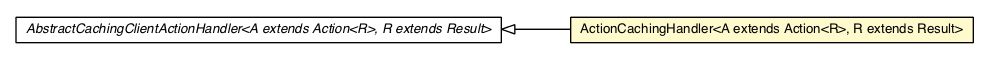

com.gwtplatform.dispatch.client.actionhandler.caching
Class ActionCachingHandler<A extends Action<R>,R extends Result>

java.lang.Object
 com.gwtplatform.dispatch.client.actionhandler.AbstractClientActionHandler<A,R>
com.gwtplatform.dispatch.client.actionhandler.caching.AbstractCachingClientActionHandler<A,R>
com.gwtplatform.dispatch.client.actionhandler.caching.ActionCachingHandler<A,R>
com.gwtplatform.dispatch.client.actionhandler.AbstractClientActionHandler<A,R>
com.gwtplatform.dispatch.client.actionhandler.caching.AbstractCachingClientActionHandler<A,R>
com.gwtplatform.dispatch.client.actionhandler.caching.ActionCachingHandler<A,R>
- Type Parameters:
A - The type of the action extending Action.R - The type of the result extending Result.
- All Implemented Interfaces:
- ClientActionHandler<A,R>
public class ActionCachingHandler<A extends Action<R>,R extends Result>
- extends AbstractCachingClientActionHandler<A,R>
Default implementation of AbstractCachingClientActionHandler. It supports Action caching
TODO Add support for timeout based auto-expiry of cached results?
- Author:
- Sunny Gupta
|
Method Summary |
protected void |
postfetch(A action,
R result)
Override this method to perform an action after the call to the server
returns successfully or not. |
protected R |
prefetch(A action)
Override this method to perform an action before the call is sent to the
server. |
| Methods inherited from class java.lang.Object |
clone, equals, finalize, getClass, hashCode, notify, notifyAll, toString, wait, wait, wait |
ActionCachingHandler
public ActionCachingHandler(Class<A> actionType,
Cache cache)
postfetch
protected void postfetch(A action,
R result)
- Description copied from class:
AbstractCachingClientActionHandler
- Override this method to perform an action after the call to the server
returns successfully or not. If the call succeeded, the result will be
passed, if it failed
null will be passed in the result
parameter.
You can use this method to add the result to cache, if it is null
you should remove the action from the cache.
- Specified by:
postfetch in class AbstractCachingClientActionHandler<A extends Action<R>,R extends Result>
- Parameters:
action - The action that just finished execution on the server.result - The result after the server call, or null if the
server call failed.
prefetch
protected R prefetch(A action)
- Description copied from class:
AbstractCachingClientActionHandler
- Override this method to perform an action before the call is sent to the
server. If the call returns a non-
null result then the action is
never executed on the server and the returned value is used. If the call
returns null then the action is executed on the server.
You can use this method to fetch the action from the cache.
- Specified by:
prefetch in class AbstractCachingClientActionHandler<A extends Action<R>,R extends Result>
- Parameters:
action - The action to be prefetched
- Returns:
- The prefetched result. If not found, return
null.
Copyright © 2010-2013 ArcBees. All Rights Reserved.